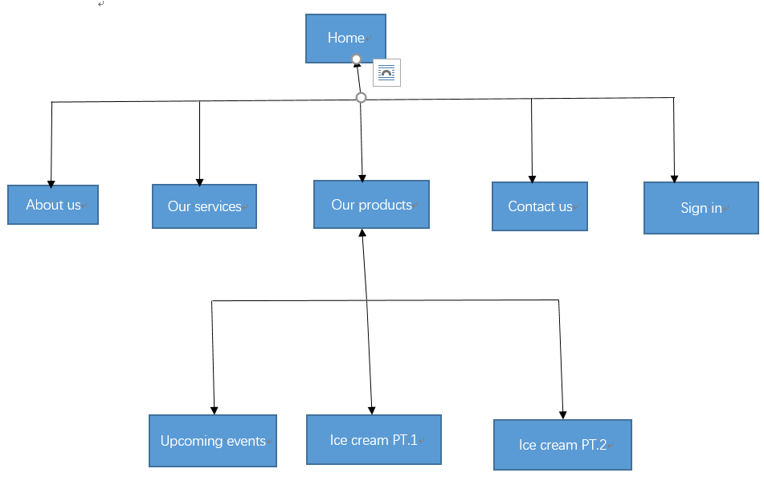

Group:
Wang guanyu jc365729
Wu zhihong jc345931
Zhang chuanwei jc426591
The first goal of this website is to advertise "DiazePam Café" which is an Ice-Cream Cafe in Singapore. The second important goal is to communicate with guests timely and get their feedback and advice so that they can update their products which is more appropriate to guests. The third goal is to provide a platform for guests to help them get some news, when this cafe update some service, guests can go to this website to know and decide whether to participate or not.So it is a necessary website for this cafe.
There are two parts to evaluate whether this website is successful or not.First part is to calculate the change of DiazePam Café income in every month.If income increase a lot which means this website is succesful.The second part is to check the number of people's feedback in this website every month. If guests feedback become more and more in every month, the website is successful. And If one of this two parts is implemented, this website is successful.
The target audience of this website is kids and young adults who like eat ice cream. As we known, nowadays most young adults like look through some websites to relax themselves even some kid like looke through website because of some pictures which attract to them. A ice cream website will let them have some interesting because most of them enjoy eat ice cream. And some good ice cream pictures will attract them to keep looking through the whole of this website especially for kids.To motivate they stay at this website and look another parts.We put some delicious ice cream pictures. And we also provide a link about service, after people click this button, they will find some interesting news, and start to decide to participate,because the news is very tempting. And then they will click another links to see what other parts are. After they click the links called "our products", they will find this cafe provide some type of ice cream with different ice cream pictures, and each of them all looks beautiful, so some of people want to eat them, they will try to buy some ice cream. So they will click another link called "contact us" to know some information about this cafe and then buy some ice cream.Finally at the bottom of every page is DiazePam Café 's address, so when people find this cafe is very close to their home, they will go to there.
